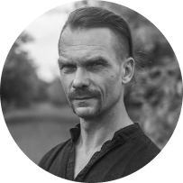
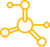
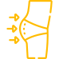
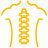

Що мені дали ці вправи ?

Віктор
Пражмовський
Три роки поспіль мав різні травми і хвороби. Після другої операції на пахову грижу, довго боявся давати собі якісь фізичні навантаження. Як наслідок – накопичилася надлишкова вага, двічі на тиждень головний біль з самого ранку, загальна слабкість і просто погане самопочуття.
Через рік став почуватися руїною. Потрібно було щось міняти. Почав з трьох вправ і поступово став виконувати комплекс повністю.
Це було саме те, що потрібно моєму організму зранку – після такої ранкової зарядки нарешті став почуватися бадьорим і здоровим.
Але найважливішим для мене ефектом стало те, що десь через півтора місяці після початку, помітив відсутність головного болю. Він просто зник.
Ці вправи виконують різні люди в Україні, Швеції, Польщі, Словаччині, Італії та Великій Британії. Та не про це мова – усі, хто регулярно виконує цю оздоровчу гімнатику, відзначають покращення загального самопочуття. А дехто – навіть стверджує, що покращився зір.
Що відбувається при регулярному виконанні комплексу «9 сил»?

Покращується
робота внутрішніх органів і виведення шлаків
Підвищується
тонус поперечних і косих м'язів живота, завдяки чому він поступово втягується

Покращується
рух лімфи в організмі, як наслідок – прибираються передумови целюліту у жінок.
Припиняються
головні болі
Покращується
робота передміхурової залози і органів малого тазу

Зміцнюються
м'язи спини, які підтримують хребет
Покращується
робота щитовидної залози
Що таке гімнастика «9 сил»?
Комплекс складається з дев'яти основних вправ, які за рахунок почергового напруження і розлаблення різних групп м'язів, пропрацьовують одну, або одночасно декілька функціональних систем організму людини.
Вправи не потребують особливої підготовки, тому можуть виконуватися після мінімального засвоєння техніки виконання. Більше того – кожну вправу можна робити окремо протягом дня. Але краще – разом.
Оздороча гімнастика «9 сил» була розроблена майстром бойового мистецтва «Спас» Олександром Притулою на основі авторських і народних методик. В ній поєднуються давні традиції з сучасними досягненнями.
Олександр один з двох українців, які отримали «Оскара» в галузі бойових мистецтв у США.

Відповіді на найчастіші
запитання
Для кого потрібен комплекс «9 сил» ?
+
Усім, хто хоче бути здоровим. А оскільки ми починаємо берегти своє здоров'я лише у віці, коли стаємо мудрішими, то усім, кому уже є 40 років і більше.
На зміцнення яких саме системи організму спрямовані вправи ?
+
- 1. Серцево-судинна
- 2. Лімфатична система
- 3. Харчовий тракт
- 4. Ендокринна система
- 5. Дихальна система
Що відбувається при регулярному виконанні комплексу?
+
- 1. Зміцнюються м'язи майже всього тіла
- 2. Покращується стан венозних судин
- 3. Нормалізується тиск
- 4. Припиняються головні болі
- 5. Покращується рух лімфи в організмі, як наслідок – прибираються передумови целюліту у жінок.
- 6. Покращується робота передміхурової залози у чоловіків і органів малого тазу у жінок
- 7. Покращується робота внутрішніх органів і виведення шлаків
- 8. Підвищується тонус поперечних і косих м'язів живота, завдяки чому він поступово втягується
- 9. Зміцнюються м'язи спини, які підтримують хребет
- 10. Покращується кровопостачання головного мозку
- 11. Покращується робота щитовидної залози
Чи є обмеження для виконання комплексу?
+
Так, є: надмірний артеріальний тиск вище 200-220 мм рт.ст.; тромбофлебіт на тлі варикозу; виражена серцева недостатність з миготливою аритмією, інфаркт, інсульт; сечокам'яна і жовчокам'яна хвороба; остеохондроз хребта, ускладнений грижами дисків більше 7 мм і вираженим больовим синдромом. Але навіть при протипоказаннях варто порадитися з лікарем і робити вправи з меншою інтенсивністю. Адже, ми інтенсивніше хворіємо, коли менше рухаємося. Найкращим показником буде ваше самопочуття. Фізичні вправи мають викликати задоволення і насолоду.
Яке потрібно обладнання?
+
Обладнання для виконання оздоровчої гімнастики «9 сил» не потрібно.
Що я отримую після оплати?
+
Ви отримуєте доступ до відео з описом комплексу. На вказану Вами електронну пошту приходить лист з pdf файлом, у якому є активне посилання на закрите відео у ютубі.
КОРОТКО ПРО МЕНЕ
Мене звати Віктор Пражмовський, з 2004 року я тренер бойового мистецтва «Спас».

Маю три вищі освіти: офіцер управління тактичного рівня, політолог і спортивний тренер.
Один з фундаторів бойового мистецтва «Спас»
Маю перший дан контактного карате і четвертий дан школи Окамі-рю.

36
років досвіду у бойових мистецтвах
300+
задоволених учнів